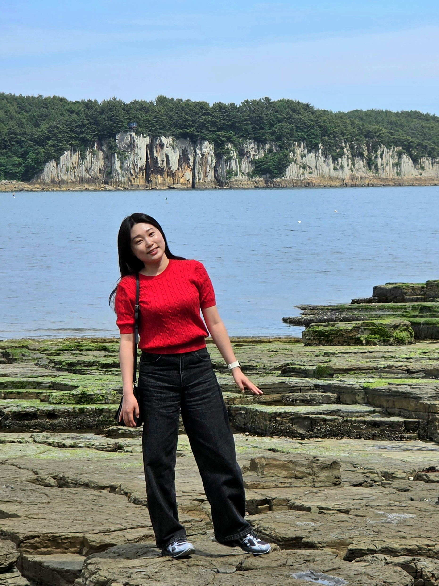

지진학 박사과정 · Southern Methodist University, 댈러스
Ph.D. student in Seismology · Southern Methodist University, Dallas
지진파 자료를 이용하여 지구 내부에서 발생하는 지진의 특성을 분석하고 있어요. 석사과정 때는 캐나다에서 발생하는 수압파쇄로 인한 유발지진의 특성을 분석하고 규모식을 개발하였고, 현재는 영덕 해역에서 발생하는 지진을 분석하고 있습니다.
아직 명확한 박사과정 주제는 없지만, 지진계로 할 수 있는 다양한 연구에 관심이 있습니다.
I use seismic data to characterize earthquakes occurring inside the Earth. During my master’s, I analyzed earthquakes induced by hydraulic fracturing in Canada and developed a magnitude scale for the study area. I am now analyzing earthquakes off the coast of Yeongdeok, South Korea.
I have not settled on a dissertation topic yet, but I am interested in the wide range of research that seismometers make possible.
영덕 앞바다, 특히 후포퇴 부근에서 발생하는 지진을 분석하고 있어요.
I am analyzing earthquakes that occur off the Yeongdeok coast, particularly near the Hupo Bank.
캐나다 수압파쇄 시 발생하는 유발지진의 위치와 특성을 분석하고, 연구지역의 특성에 맞는 규모식을 개발하였습니다. (논문 링크)
I analyzed the locations and characteristics of earthquakes induced by hydraulic fracturing in Canada and developed a magnitude scale suited to the study area. (Paper)
논문: Characterization of microseismic sources in the Kiskatinaw area, British Columbia, Canada
Thesis: Characterization of microseismic sources in the Kiskatinaw area, British Columbia, Canada
캡스톤: 검층 자료를 이용한 셰일가스 저류층의 취성 분석에서 가스포화도에 의한 취성도의 왜곡과 보정 방법
Capstone: Distortion of brittleness by gas saturation in shale gas reservoirs, and a correction method, using well-log data
댓글Comments